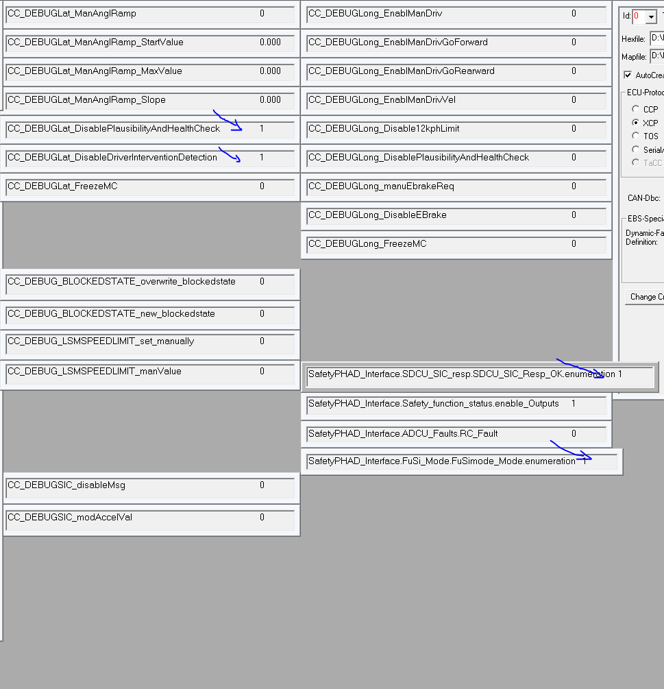

CW39: Di 25.09.2018 08:33-------------------------------------------------------------------------------------------------------------------
In proj_config_B8_PHAD2018.h einstellen:
#define ENABLE_DEBUG_LAT_LONG_SAFETY TSK_OFF // enable to us debug features for lateral control, longitudinal control and the safety itself
#define USE_PlausibilityHealthAndValueCheck TSK_OFF // enable to use Highly automated driving&parking Safety
#define USE_DRIVERINTERVENTIONDETECTION TSK_OFF // enable to use the DriverInterventionDetection: If intervention is detected for more then xy seconds, disable CAN output to actuators
#define USE_PHAD2018_LSM_HSM_switching TSK_OFF // enable to use FuSi mode switching between LSM and HSM (low/high speed maneuvering => means automated driving and automated parking)
#define ALLOW_ONLY_LSM_MODE TSK_OFF // if this is enabled, HSM mode is not available => e.g. for parking only demos
#define USE_AP_EBRAKE TSK_OFF // if enabled, provide E-Brake feature
